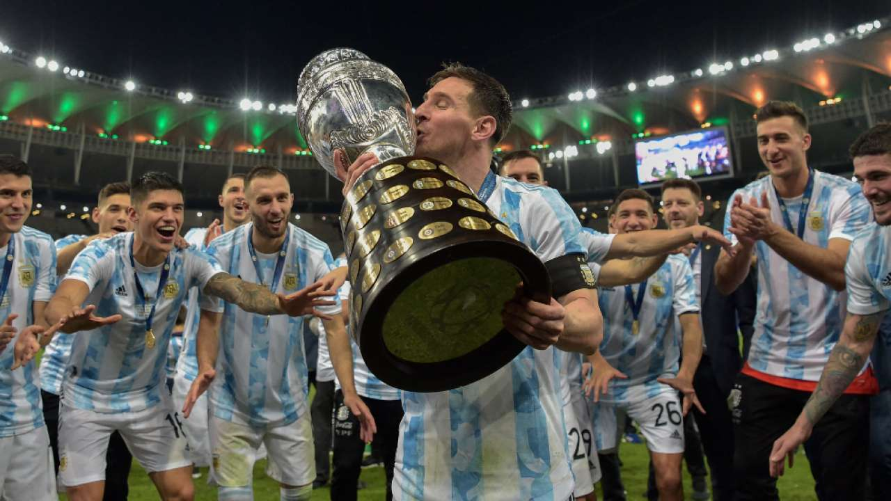

Copa America 2021 Final
Why Argentina Deserved Copa America Title This Time
Messi finally ends international title drought, urges Argentina to take form into World Cup.
RIO DE JANEIRO • When Lionel Messi, who was already a regular starter for Barcelona, made his international bow in 2005 as an 18-year-old for Argentina, he surely never imagined it would take him 16 years to finally claim a trophy with his country. The six-time Ballon d'Or winner had to suffer numerous disappointments, including losing four finals, before leading the Argentinians to a 1-0 victory over Brazil in the Copa America title decider at Rio de Janeiro's iconic Maracana Stadium on Saturday....